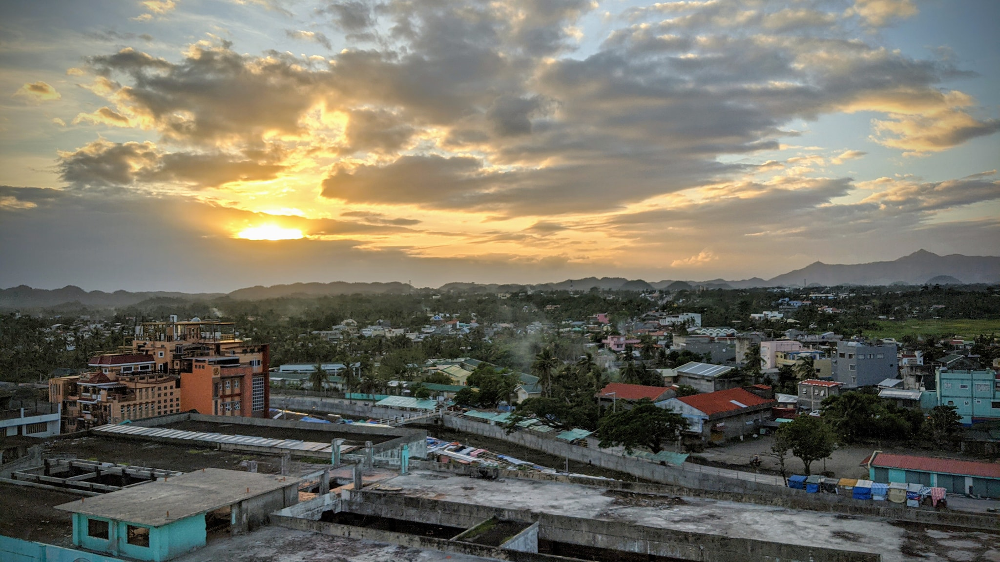
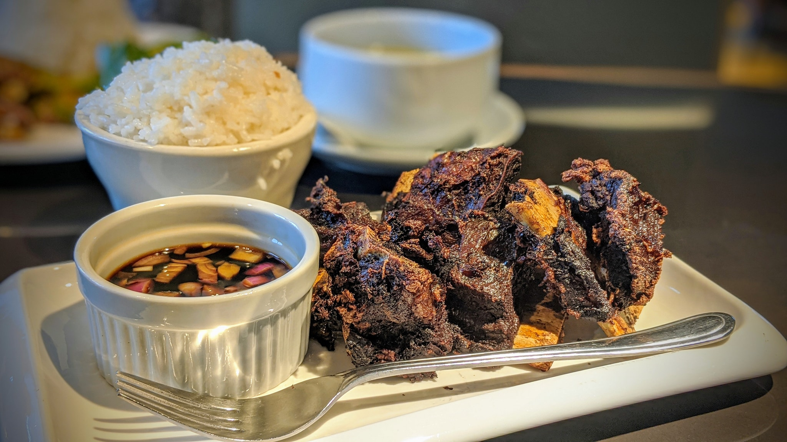
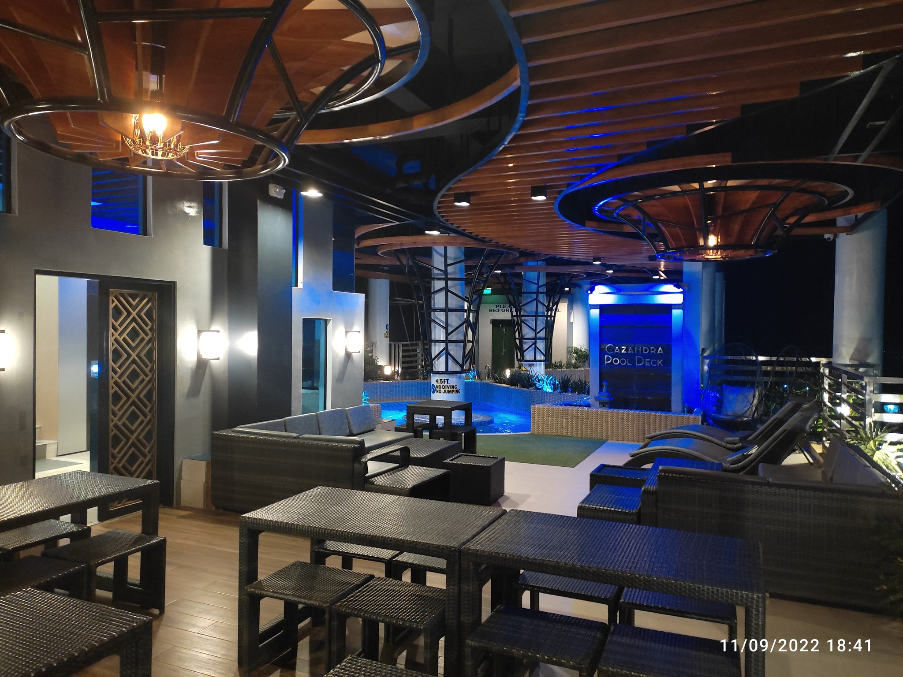

Gem in the heart of Virac
From Unkown contributor 2022
Arriving at Lucky Hotel & Resort in Virac, Catanduanes, I was pleasantly surprised. The exterior, while not luxurious, had a charming tropical vibe with lush greenery and a welcoming atmosphere. The staff greeted me with warm smiles and efficient service, making the check-in process a breeze. I booked a standard room, and while it wasn't the most spacious, it was clean, comfortable, and had everything I needed. The bed was surprisingly comfy, and the air conditioning worked perfectly, a welcome relief from the Catanduanes heat. The bathroom was basic but clean, and the hot shower was a bonus.

Skyline view of downtown Virac from Lucky Hotel
Lucky Hotel's location is unbeatable. Right in the heart of Virac, it's close to everything you need: restaurants, shops, the cathedral, and even the beach is just a short walk away. I loved being able to explore the town on foot and felt safe and secure even at night.

Delicious meals
The hotel's restaurant surprised me with its delicious and affordable meals. I tried a variety of local dishes, like Bicol Express and Laing, and everything was fresh and flavorful. The breakfast buffet was simple but satisfying, with pancakes, eggs, rice, and local fruits.
Sure, Lucky Hotel isn't directly on the beach, but the beautiful Virac Bay is just a few minutes' walk away. I spent countless hours lounging on the sand, soaking up the sun, and swimming in the crystal-clear water. The hotel even offers affordable beach chair rentals and towels, making things even more convenient. Lucky Hotel & Resort might not be a five-star luxury resort, but it's a fantastic option for budget-conscious travelers like myself. The friendly staff, clean rooms, delicious food, and unbeatable location make it a perfect base for exploring Virac and Catanduanes. I would definitely recommend it to anyone looking for comfortable, affordable accommodations with a touch of island charm.

Pool deck at night
OTHER DESTINATIONS